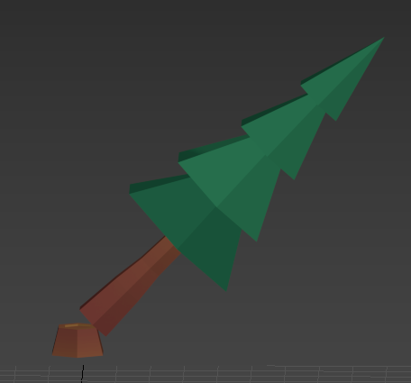
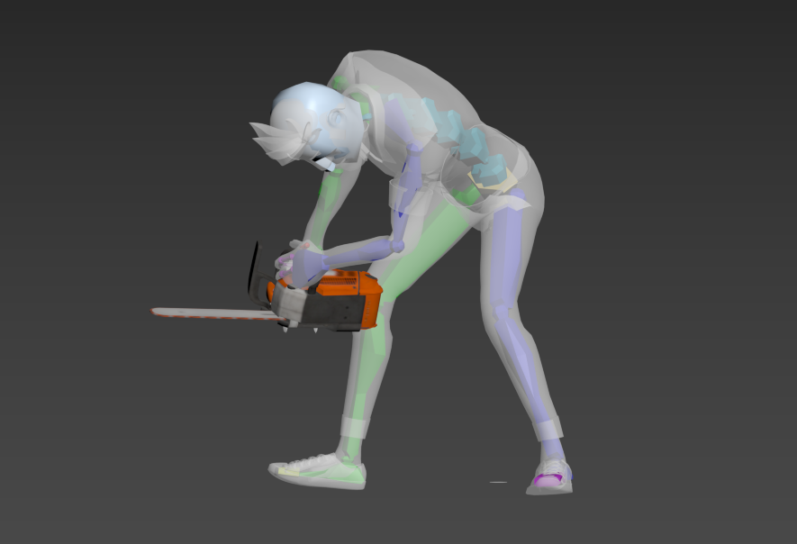
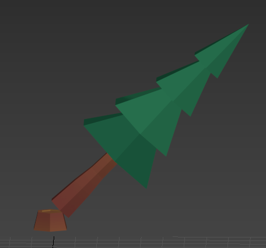
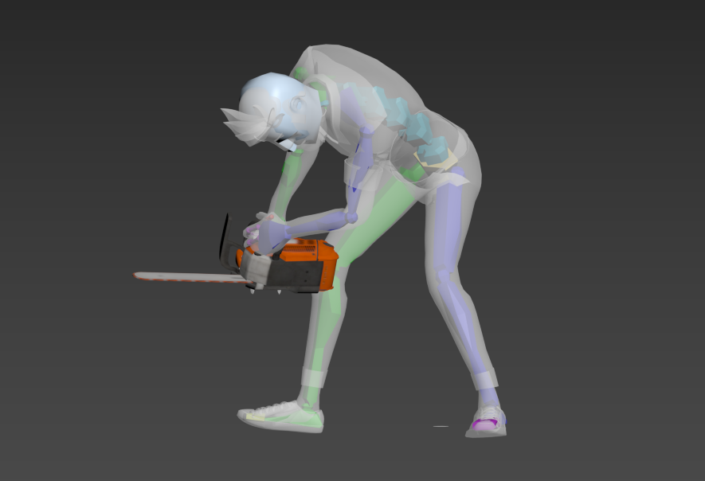

Qu'est-ce que Fransylva ?
Fransylva est une association forestière qui recherche
un support publicitaire pour faire valoir leurs actions
et se faire connaître par le publique.
Pourquoi une
animation 3D est un très bon modèle publicitaire pour
l'association ?
L'animation 3D permet de mieux attirer
l'attention du publique en étant plus accrocheuse pour une
publicité. Cela permet aussi de démarquer plus facilement
des autres publicités car celles-ci sont moins courantes que
les publicités traditionnelles. L'animation 3D crée de
l'engagement en suscitant l'intérêt des spectateurs
permettant à l'association Fransylva de les impliquer dans
leurs actions pour soutenir l'association.
Si vous en voulez savoir plus sur fransylva vous pouvez cliquer sur leur logo qui vous redirigera vers le site officiel
Le storyboard
Avec l'aide de notre enseignante en communication, nous avons pu créer un storyboard suivant les demande du client. Le storyboard se divise en plusieurs étapes avec introduction, problématiques, missions répondant aux problématiques et conclusion. Cette production nous a permis de nous situer dans l'avancement du projet, de dispersé le travail à faire et expliqué l'animation ainsi que la marche à suivre au client.
La motion Capture : notre point technique
Qu'est-ce que la motion capture ?
La motion capture, également connue sous le nom de mocap, est une technique de capture des mouvements du corps humain ou d'autres objets en 3D. Cette technologie a révolutionné le monde de l'animation en offrant un réalisme sans précédent et une plus grande facilité d'utilisation. Dans le cadre de notre projet d'animation 3D pour l'association forestière Fransylva, nous avons utilisé la motion capture pour créer des scènes réalistes et immersives mettant en scène des personnages et des éléments forestiers.
Utilisation et calibrage
Pour réaliser cette animation 3D, nous avons choisi le logiciel 3ds Max, qui offre une intégration facile des données de motion capture et une multitude d'outils pour le rendu, le rigging et l'animation. Avant de commencer, nous avons dû calibrer les capteurs de mocap pour garantir la précision et la qualité des données capturées. Le processus de calibrage implique généralement la configuration des capteurs, ainsi que l'ajustement des paramètres pour minimiser les erreurs de capture.
Cependant, l'utilisation de la motion capture pour notre projet n'a pas été sans défis. L'un des problèmes les plus courants est le bruit et les erreurs de capture, qui peuvent entraîner des données imprécises ou incomplètes. Pour résoudre ce problème, nous avons utilisé des algorithmes de nettoyage et de filtrage pour éliminer les erreurs et obtenir des données plus fiables.
En outre, le processus de retargeting, qui consiste à adapter les données de mocap aux personnages 3D, peut être complexe en raison des différences entre les proportions et les articulations du modèle 3D et de l'acteur réel. Nous avons dû effectuer plusieurs ajustements et essais pour garantir que les mouvements capturés étaient naturels et réalistes sur nos personnages 3D.
Avantage de la motion capture
Malgré ces défis, l'utilisation de la motion capture pour notre animation 3D sur l'association forestière Fransylva a été extrêmement bénéfique. Les scènes animées ont gagné en réalisme et en fluidité, permettant aux spectateurs de s'immerger pleinement dans l'environnement forestier et de mieux comprendre les actions et les enjeux de l'association. En fin de compte, la motion capture a permis de créer une expérience visuelle convaincante et engageante pour présenter le travail de l'association Fransylva.
Voici quelques vidéos illustrant l'utilisation de la motion capture.
Les animations
Dans le monde de l'animation, plusieurs étapes sont nécessaires pour donner vie aux personnages et aux environnements. Parmi ces étapes, on retrouve le texturing et la modélisation. Dans notre projet, nous avons eu la chance de trouver la majorité des modélisations nécessaires en libre-service sur Internet. Cette opportunité nous a permis de nous concentrer davantage sur l'apprentissage de l'animation en elle-même.
L'une des scènes les plus complexes à animer fut celle où l'on s'enfonce dans la forêt. Cette séquence a présenté plusieurs problématiques à surmonter, notamment en termes de mouvements des personnages et de la caméra. En effet, il fallait créer une animation fluide et réaliste pour capturer l'essence même de la forêt, tout en mettant en évidence les interactions entre les éléments présents.
Malgré la disponibilité des modèles en ligne, nous avons dû réaliser la modélisation de l'arbre mascotte qui représentait un élément central de notre histoire. Cet arbre avait la particularité de changer de feuillage en fonction des saisons, ce qui impliquait un travail minutieux sur chaque branche. Chaque détail était crucial pour donner l'impression d'un arbre vivant et unique.
La réalisation de ce projet d'animation nous a permis d'apprendre à gérer différentes étapes du processus de création, du texturing à l'animation en passant par la modélisation. La complexité de certaines scènes, comme celle de l'enfoncement dans la forêt, nous a poussé à repousser nos limites et à explorer de nouvelles techniques pour surmonter les défis rencontrés. En fin de compte, ce projet fut une expérience enrichissante qui nous a permis d'acquérir une meilleure compréhension du monde de l'animation et de ses multiples facettes.
Voici quelques modélisation que nous avons pu réaliser
 



Le montage
Le montage vidéo est une étape cruciale dans la réalisation d'un projet d'animation. Il permet d'assembler les différents éléments pour créer un rendu final harmonieux et attrayant. Dans notre projet, nous avons suivi un processus précis pour assembler les images, les sons et la voix-off afin de créer une vidéo fluide et immersive.
Premièrement, nous avons collecté les images des animations une par une, en prenant une image pour chaque seconde. Ce processus, bien que fastidieux, est essentiel pour garantir une synchronisation parfaite entre les images et le rythme de la vidéo. Une fois toutes les images rassemblées, nous avons procédé à l'assemblage et au montage de ces images pour créer un rendu fluide, en veillant à ce que chaque image corresponde à la seconde appropriée.
Ensuite, nous avons travaillé sur la bande sonore de la vidéo. La musique, la voix-off et les bruitages jouent un rôle crucial dans la création d'une ambiance et d'une expérience captivante pour le spectateur. Nous avons soigneusement sélectionné la musique qui correspondait à l'atmosphère et à l'émotion que nous souhaitions véhiculer dans chaque scène. La voix-off ont été enregistrées avec précision pour s'adapter parfaitement aux mouvements des lèvres des personnages et aux temps forts de l'animation. Les bruitages, quant à eux, ont été ajoutés pour donner une touche de réalisme et de profondeur à chaque scène.
Enfin, une fois tous les éléments réunis, nous avons procédé à l'ajustement final du montage, en veillant à ce que chaque image, chaque son et chaque voix s'harmonisent parfaitement pour créer une expérience fluide et cohérente. Le montage vidéo est un travail minutieux et exigeant, mais il est indispensable pour donner vie à une animation réussie et marquer l'esprit des spectateurs.
Résultat
En conclusion, notre projet d'animation a été une expérience enrichissante et éducative qui nous a permis d'explorer les différentes facettes du processus de création, du texturing à la modélisation, en passant par l'animation et le montage vidéo. Malgré les défis rencontrés, nous avons réussi à surmonter les obstacles et à produire une vidéo fluide, captivante et immersive. Ce projet a non seulement renforcé notre compréhension du monde de l'animation, mais nous a également permis de développer notre créativité et nos compétences techniques. En fin de compte, notre travail acharné et notre passion pour l'animation se reflètent dans le résultat final, dont nous sommes très fiers.
Voici donc le résultat final de notre vidéo
L'équipe
Merci d'avoir lu attentivement ce récapitulatif de notre projet voici nos différents liens afin de nous contacter
Léo RICARD
Lena VIGNE
Pierrick CHAUDIER